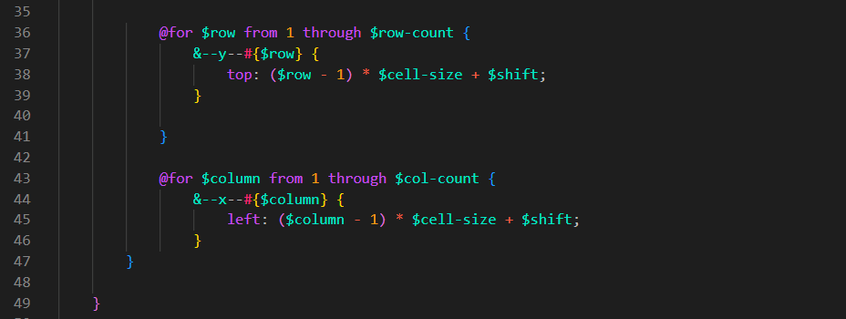
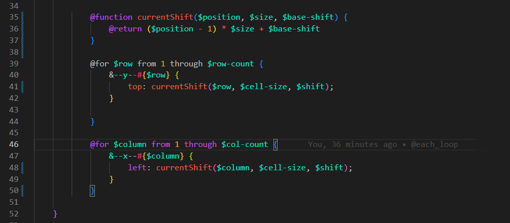

@function
Intro
Agora iremos ver outra vantagem que o SASS nos oferece para evitarmos a dupliacao de codigo. Para essa aula, continuaremos com o mesmo codigo das aulas anteriores "game".
Agora iremos ver outra vantagem que o SASS nos oferece para evitarmos a dupliacao de codigo. Para essa aula, continuaremos com o mesmo codigo das aulas anteriores "game".
Aqui iremos supor esse trecho de nosso codigo:

Podemos observar que temos dois loops que usam a mesma logica de calculo de deslocamento, (tamanho da celula * numero de linhas ou colunas - 1 e + shift).
Iremos supor que essa logica deva ser sempre a mesma, assim nao iremos precisar escreve-la duas vezes, e para evitarmos a repeticao dessa logica o SASS tem fucncoes como no JS.
Para usa-lo iremos fazer da seguinte forma:
@function currentShift($position, $size, $base-shift) {
@return ($position - 1) * $size + $base-shift
}
Agora com essa funcao podemos utilizar ela no local das deslocacoes a chamando por la, iremos fazer seu chamado no local das regras apos o top:, ficando da seguinte forma:
@for $row from 1 through $row-count {
&--y--#{$row} {
top: currentShift($row, $cell-size, $shift);
}
}
@for $column from 1 through $col-count {
&--x--#{$column} {
left: currentShift($column, $cell-size, $shift);
}
}
Ficando agora da seguinte forma em nosso codigo:

Conteudo da aula